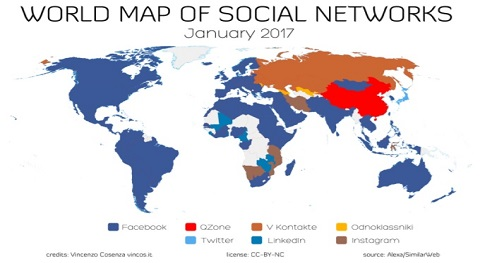

La base en que surgen las redes sociales es un fenómeno que nace ya casi más de una década en el entorno de internet. De esta manera se les clasifica en la categoría de medio social, son redes sociales conocidas como wikis, blog, Facebook entre otros, el blog ha sufrido una evolución a lo largo del tiempo donde se permite acceso al contenido a diferentes usuarios y donde se publican contenidos, como blog entendemos que es un espacio personal del usuario donde se publican contenidos propios o citando a otros autores, hoy dia también lo usan las empresas para dar a conocer los beneficios que otorgan con sus productos y/o servicios. Por su parte las redes sociales se denominan como plataformas donde el usuario crea su propio perfil interactuando con el resto de usuarios en ese mismo ecosistema consumiendo y produciendo contenido.
Ahora bien como es que se constituye socialmente? Gracias al concepto de Frigyes Karinthy escritor
húngaro que lo llamo ##“seis grados” en los anos 30 y quien explico lo siguiente: “ Cualquier sujeto
del mundo esta interconectado con otro como máximo en ##seis grados de separación”. Es decir que estando
en ##Colombia podre interactuar con otro individuo que se encuentre viviendo en ##Estados Unidos y habra
como máximo 6 grados hasta acceder a ella o a el y además nos podrá unir algún tipo de afición que tengamos
en común y asi sucesivamente empezamos a conocer gente que conoce a otra gente que nos identifica con ese sujeto.
Sin embargo las redes sociales ya han roto ese record de los “seis grados” y ahora esta definido en 4,74 grados.

Asi que son millones de usuarios quienes hacen uso de las redes sociales e invierten mas de 60 minutos al dia. Y que es lo que hace que unas redes sociales tengan mas éxito que otras? Pues bien como en los negocios cuando estas vendiendo tus productos y/o servicios, por ejemplo Facebook ha sido una red social que ha sabido adaptarse a lo que los usuarios demandan y por eso ha sobrevivido desde sus inicios, ha evolucionado. De esta manera podemos resaltar algunos tipos de clasificación en las redes sociales, red social vertical y horizontal en función al tipo de temática y publico objetivo. Horizontal porque unen a personas que no tienen nada en común para interactuar entre ellos, Facebook es un ejemplo de ello. Por su parte vertical porque sus integrantes tienen intereses comunes, comparten una profesión de interés un ejemplo de ello es Linkedin.
Continuando con la clasificación, también conocidas como red social humana esto porque tienen al ser humano como eje central quien accede a contenidos generados por otros individuos, en donde se desea estar en contacto con otras personas de manera online, teniendo acceso a esas publicaciones que realizan los demás un ejemplo de ello Facebook. Red social de contenido ejemplo de ello Youtube acceden a esta red social sin importar quien publica contenido, el eje principal aquí es el contenido en si.
Como se menciono al comienzo en relación a los blogs, estos ya existían al igual que plataformas para
##comunicación social; ##Facebook, ##Youtube, ##Google + entre otras ha revolucionado en el mundo digital y
social y ahora es la ##estrategia de algunas grandes marcas para llegar a sus clientes potenciales.
Diferenciando la relación comunicación individuo-marca ##offline y online. Y ni hablar de las comunidades
que se desarrollan dentro de estas redes sociales o creadas de manera independiente a través de complejos
sitios ##(framework) web que han democratizado el conocimiento de acuerdo a los distintos gustos e intereses.
Por último la reputación online que viene del concepto tradicional “comentarios repetitivos que los demás hablan de mí una vez que me voy del cuarto” vinculado al mundo del internet en redes sociales, pensemos, influimos de manera positiva o negativa sobre lo que los demás piensan de nosotros? Acaso nos importa lo que los demás piensen de nosotros? Y si es aplicado a la reputación online de las empresas en relación con sus productos y/o servicios! como están los consumidores percibiendo la identidad de la empresa?, este concepto va en dos vías: 1. Desde el punto de vista legal, los comentarios hacia la empresa o marca se están extralimitando mas alla de la libertad de expresión con injurias y vulneración del honor? 2. Desde el punto de vista del mercado, distribuyendo el producto, los consumidores lo perciben de manera positiva o negativa? si acaso este ultimo es el caso, la estrategia será mejorar esa imagen negativa comunicando las principales características del producto y que es lo novedoso de este.